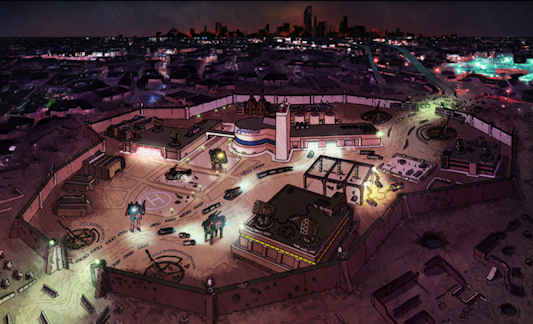

You are all recently graduated pilots, or re-instated ones, regardless you have been assigned to your first mission. You have been transferred to the Ebro-class light carrier ship named the “Rio Grande”. This ship has been in orbit around the planet Cressidum. On the planet, 500 years of growth have spawned large nations, including the Leandric States Alliance (LSA), the Vestan Sovereignty, and the Republic of Okasnia. The current ship orders of the Rio Grande are to oversee the LSA, who have been fighting against the oppressive SecComm remnants, The Sovereignty. Socially, Cessidum is an isolationist state, and while tensions are high between the LSA and The Sovereignty, at this moment, it is not to the point of war.
Union has held diplomatic talks with Cressidum, specifically with the LSA, who have been offered access to new printing tech they have not been able to develop. Along with numerous societal benefits. The Sovereginty however, is not interested and swears by it’s rule. Our goal is to change this fact, through one means or another.
Cressidium
The main point of interest for your mission is the planet called Cressidium A Cradle-type planet along the Cascade line. Suitable for life with diverse cilmate. Flora and fauna are varied with native types and new speciemns from colonization. Human growth is assumed to have been ongoing for 500 years. Records show a number of large nations which have now defaulted to the main 3 powers listed in the briefing.

Mission Entries
Listed here is an archive of Mission Entries, aka Mission Reports/Session Recaps provided by the onboard NHP Rio.